5560B analogue control panel
- Path
- Descriptions > 55 ELECTRICAL EQUIPMENT > 5560 INSTRUMENT PANEL > 5560B analogue control panel
- Kind
- system description
- Applies to
- all engines; all production periods
- Interactive page
- https://sloeber94.github.io/elrnDB-fPnd/en/#/2750969
Applies to: all engines; all production periods
GENERAL DESCRIPTION OF THE SYSTEM
The instrument panel fitted on the vehicle is an electronic component connected to the B-CAN and to the dashboard wiring and is known as the NQS (Instrument Panel Node).
The task of the instrument panel connector is to:
- receive and transmit information at the B-CAN network;
- display the vehicle operating stage;
The NQS displays the vehicle operating parameters and informs the user of possible failures in the electronic on board systems.
There are three types of instrument panel depending on the vehicle specification:
- basic level, available on Actual and Active versions
- medium level, available on Dynamic versions
- high level, available on Emotion versions and with certain options such as an Automatic Air Conditioner
Applies to: all engines; all production periods
Diagram of basic level instrument panel present on Actual and Active versions
The following figure shows the basic level instrument panel
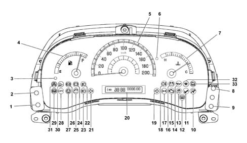
1, Headlamp alignment corrector (CAF - ) (the light beam lowers) 2, Headlamp alignment corrector (CAF +) (the light beam rises) 3, Fuel reserve warning light (amber yellow) 4, Fuel level gauge 5, Electronic speedometer 6, Engine coolant overheating warning light (red) 7, Engine coolant temperature gauge 8, Milometer/trip meter button 9, Clock adjustment button 10, Air Bag failure warning light (red) 11, Passenger Air Bag disabled warning light (amber yellow) 12 - Heated rear window warning light 13, Fiat CODE - vehicle protection system failure warning light (amber yellow) 14, Insufficient engine oil pressure warning light (red) 15, Engine management system failure warning light (EOBD) (amber yellow - petrol versions) 16, Battery recharging warning light 17, Side lights and dipped headlamps - Follow me home function 18, Rear fog lamps (amber yellow) 19, Right direction indicator (green) 20 - Segment display 21, Left direction indicator (green) 22 - Foglamp (green) 23 - High beams (blue) 24 - Insufficient brake fluid warning light (red) - Handbrake applied (red) 25, Doors not properly shut warning light (red) 26 - ABS failure warning light (amber yellow) - EBD failure (together with the insufficient brake fluid warning light) 27, Electric power steering failure (red) 28, CITY function on (green) 29, Hill Holder system failure warning light (amber yellow) 30, ASR wheel antislip systemfailure warning light (amber yellow) 31, ESP failure warning light (amber yellow) 32, Heater plugs warning light (amber yellow) 33, Water in diesel filter warning light (amber yellow)
Applies to: all engines; all production periods
Segment display features
The digital display gives information on the odometer: mileometer and trip counter.
Witth key out (when at least one of the doors is opened), the display lights up and displays the mileometer reading.
If the follow me home function is active (see paragraph on 'Displaying the follow me home function', a message indicating the length of time the function will remain active instead of the mileometer reading.
Applies to: all engines; all production periods
Information present on display
The following diagram shows information that can be displayed.
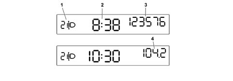
1 - Headlamp alignment position (only with low beams on) 2 - Clock (always displayed, even with key out and front doors closed) 3 - Mileometer information 4 - Trip counter information
Applies to: all engines; all production periods
Warning light diagnostic function
The instrument panel tests the following warning lights:
- handbrake on/low brake fluid level
- ABS and EBD system (where present)
- Dualdriver electric power steering fault (where fitted)
Diagnosis takes place automatically when the ignition key is turned to the ON position and during normal operation when a fault is indicated.
At the end of the intial warning light check, the display indicates the fault (in one or more warning lights) by displaying the flashing message 'LED error'
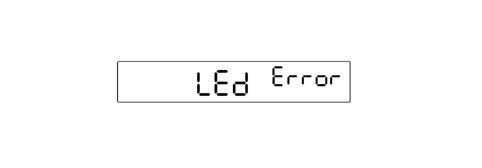
Applies to: all engines; all production periods
FOLLOW ME HOME function display
The control panel in place of the milometer should show 'F XXX' where:
- 'F' is the Follow me home fuction activated message;
- 'XXX' are the seconds set using the steering column switch unit which should not decrease during the display. After pressing the steering column switch unit 7 times, the time displayed (210 seconds) should not increase any more.
The display remains for 20 seconds starting from the last time the steering column switch unit is pressed unless the function is deactivated during the display through an abort command from the steering column switch unit. This also takes place after the steering column switch unit is pressed for the seventh time.
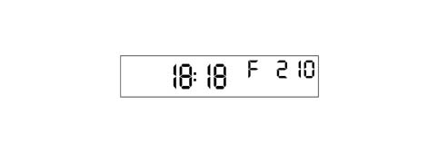
Applies to: all engines; all production periods
INERTIA SWITCH TRIGGERED display management
If the inertia switch is triggered, an 'FPS on' message is shown on the display instead of the mileometer. This remains fixed as long as the operations lasts.
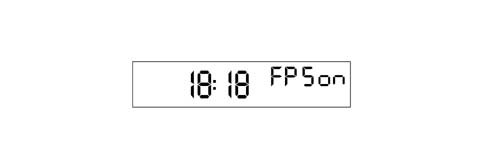
Applies to: all engines; all production periods
Control keys
Two keys on the left of the control panel allow headlamp height to be corrected according to the load carried. The keys are active with the key ON and low beams on:
- Headlamp alignment corrector (CAF -) (the light beam lowers)
- Headlamp alignment corrector (CAF +) (the light beam rises)
There are 2 buttons on the right side of the instrument panel:
- clock button
- milometer button (total/trip + reset)
If the milometer button is pressed for 2s there is a switch between the trip mileage and total mileage displays.
Pressing the milometer button for more than 2s resets (zeros) the trip meter.
Applies to: all engines; all production periods
Digital clock
To adjust the time, press the clock adjustment button: this adjustment begins after a few moments when the key is held down. Each individual press advances the clock by one unit. When the key is held down for a few moments, the clock automatically begins to advance quickly.
Applies to: all engines; all production periods
Diagram of medium level instrument panel available on Dynamic versions.
The following figure shows the medium level instrument panel.
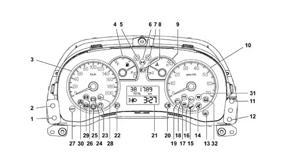
1, Headlamp alignment corrector (CAF - ) (the light beam lowers) 2, Headlamp alignment corrector (CAF +) (the light beam rises) 3, Electronic speedometer 4, fuel level gauge (with reserve warning light) 5, Left direction indicator (green) 6, Side lights and dipped headlamps - Follow me home function 7, Right direction indicator (green) 8, Main beam headlamps (blue) 9, Engine coolant temperature gauge with overheating warning light 10, Electronic rev counter 11 - Clock adjustment key (+) 12, Clock adjustment key (-) 13 - Heated rear windscreen warning light 14 Air Bag failure warning light (red) 15 - Passenger Air Bag disabled warning light (amber yellow) 16 - Insufficient engine oil pressure warning light (red) 17 - Fiat CODE - vehicle protection system failure warning light (amber yellow) 18 - Battery recharging warning light 19 - Engine management system failure warning light (EOBD) (amber yellow - petrol versions) 20 - Rear fog lamps (amber yellow) 21 - Digital display 22 - Foglamp (green) 23 - Doors improperly closed warning light (red) 24 - Insufficient brake fluid warning light (red) - Handbrake applied (red) 25 - Electric power steering failure (red) 26 - ABS failure warning light (amber yellow) - EBD failure (together with the insufficient brake fluid warning light) 27 - CITY function on (green) 28, ASR failure warning light (amber yellow) 29, Hill Holder system failure warning light (amber yellow) 30, ESP failure warning light (amber yellow) 31, Heater plugs warning light (amber yellow) 32, Water in diesel filter warning light (amber yellow)
Applies to: all engines; all production periods
Display
Two line display + Trip Computer icon for the display of:
- total mileage counter (the trip meter is a function of the trip computer);
- clock;
- headlamp alignment corrector reading;
- trip computer data (processed by the control panel).
A - Headlamp alignment position display (only with low beams on) B - Clock C - Mileometer
Applies to: all engines; all production periods
Display
The display remains off with key out and doors closed.
With key out (when one of the doors is opened), the display lights up and displays the time and mileometer reading for a few seconds.
If the follow me home function is active (see paragraph on 'Displaying the follow me home function', a message indicating the length of time the function will remain active instead of the mileometer reading.
Applies to: all engines; all production periods
FOLLOW ME HOME function display
The control panel in place of the milometer should show 'F XXX' where:
- 'F' is the Follow me home fuction activated message;
- 'XXX' are the seconds set using the steering column switch unit which should not decrease during the display. After pressing the steering column switch unit 7 times, the time displayed (210 seconds) should not increase any more.
The display remains for 20 seconds starting from the last time the steering column switch unit is pressed unless the function is deactivated during the display through an abort command from the steering column switch unit. This also takes place after the steering column switch unit is pressed for the seventh time.
Applies to: all engines; all production periods
TRIP COMPUTER
The Trip computer displays vehicle operating parametes after pressing a button on the right stalk.
The function may be reset
The following parameters are displayed: Range, Distance travelled, Average fuel consumption, Instantaneous fuel consumption, Average speed, Trip time (driving duration) The information requested remains displayed until the customer requests more information.
Procedure at start of journey (reset)
To begin a new trip, with the key ON, press the trip button in Trpi 2 mode (see 'Control key' chapter).
Range = indicates number of kilometres that can be covered with the fuel in the tank, assuming that the car will continue to be driven in the same style. The message '---- ' will displayed when the following events occur:
- range lower than 50 km
- if the vehicle is parked with the engine running for longer than 5 minutes
Applies to: all engines; all production periods
TRIP COMPUTER
Distance travalled = vehicle mileage from the start of the new mission (*).
Applies to: all engines; all production periods
TRIP COMPUTER
Average fuel consumption = average fuel consumption from the start of a new mission (*), may be expressed in l/100.
Applies to: all engines; all production periods
TRIP COMPUTER
Instantaneous fuel consumption = expresses change in fuel consumption updated every 5 seconds. If the vehicle is parked with the engine running, the display shows the message '---'
Applies to: all engines; all production periods
TRIP COMPUTER
Speed = represents the car's average speed on the basis of the overall time elapsed from the start of a new mission (*)
Applies to: all engines; all production periods
TRIP COMPUTER
Travelling time - time elapsed from the start of a new mission (*)
Applies to: all engines; all production periods
TRIP COMPUTER
(*) New mission = begins after a reset command
- 'manual' by the user, by pressing the appropriate key (see paragraph on 'Control keys')
- 'automatic' when the distance covered reaches 3999.9 km or when the journey time reaches 99.59 (99 hours and 59 minutes)
- whenever the battery is reconnected
Applies to: all engines; all production periods
Warning light diagnostic function
The instrument panel tests the following warning lghts (where present) and checks for faults:
- handbrake on/low brake fluid level
- ABS and EBD system
- Dualdrive electric power steering system fault
Fault diagnosis is performed automatically whenever the key is turned to MAR and during normal operation when a fault is indicated.
If there is a fault for the warning light(s) the word LED in place of the milometer and the word 'Err' in place the clock will flash in the display (at a frequency of 1 Hz, D.C. 50%) for 10 seconds
Applies to: all engines; all production periods
INERTIA SWITCH TRIGGERED display management
If the inertia switch is triggered, an 'FPS on' message is shown on the display instead of the mileometer. This remains fixed as long as the operations lasts.
Applies to: all engines; all production periods
Control keys
Two keys on the left of the control panel allow headlamp height to be corrected according to the load carried. The keys are active with the key ON and low beams on:
- Headlamp alignment corrector (CAF -) (the light beam lowers)
- Headlamp alignment corrector (CAF +) (the light beam rises)
There are 2 buttons on the right side of the instrument panel:
- key 11:clock adjustment (increases minutes)
- key 12:clock adjustment (dereases minutes)
TRIP key: located on the left stalk.
A press shorter than 1 second is indicated by 'Trip' in the function descriptions. It is used to scroll through the various screens on Trip Computer information
A perss longer than 2 seconds is indicated by 'Trip 2' in the function descriptions. It zeros the trip computer information (reset) and starts a new mission.
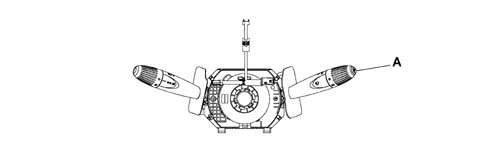
Applies to: all engines; all production periods
Digital clock
To adjust the clock, press key (11) to increase the minutes and key (12) to decrease the minutes; this adjustment begins after a few moments when the key is held down. Each individual press advances the clock by one unit. When the key is held down for a few moments, the clock automatically begins to advance quickly.
Applies to: all engines; all production periods
Diagram of the top level instrument panel available on Emotion versions.
The following figure shows the top level instrument panel.
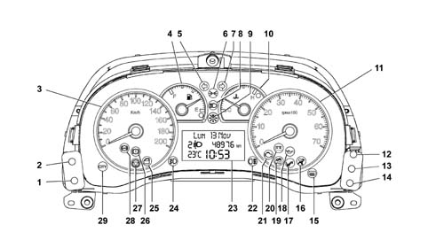
1, Headlamp alignment corrector (CAF - ) (the light beam lowers) 2, Headlamp alignment corrector (CAF +) (the light beam rises) 3, Electronic speedometer 4, fuel level gauge (with reserve warning light) 5, Left direction indicator (green) 6, Side lights and dipped headlamps - Follow me home function 7, Right direction indicator (green) 8, Main beam headlamps (blue) 9, Exterior lights failure warning light (amber yellow) 10, Engine coolant temperature gauge with overheating warning light (red) 11, Electronic rev counter 12, Key (+) 13, Mode key 14, Key (-) 15, Heated rear windscreen warning light 16, Air Bag failure warning light (red) 17, Passenger Air Bag disabled warning light (amber yellow) 18, Insufficient engine oil pressure warning light (red) 19, Fiat CODE - vehicle protection system failure warning light (amber yellow) 20, Battery recharging warning light 21, Engine management system failure warning light (EOBD) (amber yellow - petrol versions) 22, Rear fog lamps (amber yellow) 23, Digital display 24, Fog lamps (green) 25, Doors not properly shut warning light (red) 26, Insufficient brake fluid warning light (red) - Handbrake applied (red) 27, Electric power steering failure (red) 28, ABS failure warning light (amber yellow) - EBD failure (together with the insufficient brake fluid warning light) 29, CITY function on (green) 30, General failure warning light (amber yellow) 31, Hill Holder system failure warning light (amber yellow) 32, ESP failure warning light (amber yellow) 33, Heater plugs warning light (amber yellow) 34, robotised gearbox fault warning light
Applies to: all engines; all production periods
CONTROL KEY OPERATION
There are 5 buttons in the control panel.
On the right side of the instrument panel:
- key 13 'MODE'
- key 12: clock adjustment (increase minutes)
- key 14: clock adjustment (decrease minutes)
On the left side of the instrument panel:
- Headlamp alignment corrector (CAF -) (the light beam lowers)
- Headlamp alignment corrector (CAF +) (the light beam rises)
The button for selecting Trip Computer functions is on the right steering wheel stalk
Applies to: all engines; all production periods
Functions that can be selected/activated using the 'MODE'/'+'/'-' buttons
The following functions can be selected/activated:
- Set up menu (using the 'MODE' / '+' / '-' buttons).
- Lights dimmer adjustment (using the '+' / '-' buttons) with lights on
- Interruption of failure display cycle (using the 'MODE' button)
- Interruption of the Trip Computer function display (using the 'MODE' button)
Applies to: all engines; all production periods
Three line display
The three line display contains the following information.
Top line with 14 character dot matrix (7x5) for the display of:
- trip computer data (processed by the control panel);
- set up menu with setting/adjustment messages;
- messages for: activation of functions/service/failure/warning;
- repetition of radio/telephone functions at the NRR (radio receiver node)
Two lower segment lines for the display of:
- total mileage counter (the trip meter is a function of the trip computer);
- clock;
- outside temperature;
- headlamp alignment corrector reading;
- Service symbol (spanner);
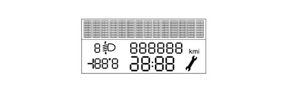
Applies to: all engines; all production periods
Standard video page at the key on
The information for the standard display is as follows:
- date (on the alphanumerical line with 14 characters);
- clock;
- total mileage;
- headlamp alignment corrector info;
- outside temperature;
The standard screen remains until a function requiring the display is activated.
The display remains off with the key out and front doors closed. With the key out, when at least one of the front doors is opened, the display lights up to display the time and mileometer reading for a few seconds.
If the 'Follow me home' function is active (see 'Follow me home' paragraph in this chapter), a message appears for as long as the function remains active.
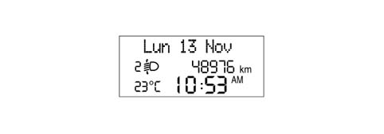
Applies to: all engines; all production periods
Display of CLOCK function
The hh:mm remains present at Key-ON but the clock is not displayed at Key-OFF.
Clock adjustment is one item on the set-up menu (See chapter on 'Functions selectable using the 'MODE'/'+'/'-' keys). hh:mm information can be selected from the set-up menu in '24h' mode (0 - 23 h) or in '12h' mode (1 - 12 h) without 'AM' and 'PM' indications.
Applies to: all engines; all production periods
Display of OUTDOOR TEMPERATURE information
A temperature reading is always guaranteed during standard screen mode. Choose between degrees Centrigrade or degrees Farheinheit from the set-up menu (see Chapter on 'Functions selectable/activatable using 'MODE'/'+'/'-' keys) If this information is not present due to signal problems, the temperature reading is replaced by dashes with the unit of measurement set previously and stored (---° C or ---°F).
Applies to: all engines; all production periods
INITIAL CHECK
When the ignition key is turned ON, the display shows the message 'Check in progress': diagnosis of all electronic systems present on the system has started. This stage lasts a few seconds. If no faults are found, the display shows the message 'Check OK' when the engine is started.
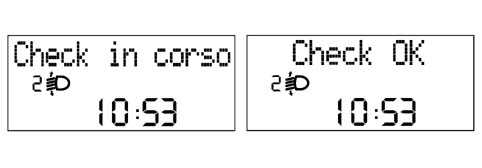
Applies to: all engines; all production periods
INITIAL CHECK
During the check stage at key-on, the following 'SERVICE' information is displayed again.
When the next service is nearly due, the message 'Service due in' followed by the number of kilometres (or miles) or days until the next service is due is automatically displayed at the key-on (after the initial check procedure).
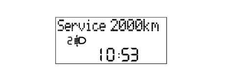
Applies to: all engines; all production periods
FAULT SIGNALS
When car faults occur, a message appears on the display describing the fault.
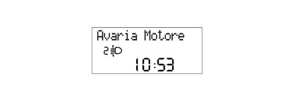
Applies to: all engines; all production periods
FAULT SIGNALS
For certain faults, a warning light present on the panel goes on and/ora buzzer goes off
The indication cycle lasts 20 seconds. If several faults recur simultaneously, the display shows each of the relevant message in rolling mode for 5s, followed by a display cycle of up to 20s duration for each fault. Severe faults are an exception and displayed permanently.
The driver can remove the fault message from the display by pressing the MODE key.
Applies to: all engines; all production periods
Display of ICE DANGER warning
In order to warn the driver of the possible presence of ice on the road, if the outside temperature measured is less than or equal to3° C, the temperature indication flashes (frequency 1Hz D.C. 70% ON) and the display shows the message 'Ice Danger'.
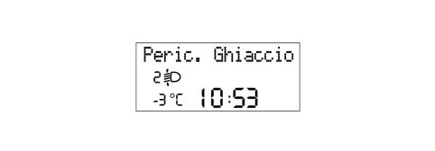
Applies to: all engines; all production periods
Display of ICE DANGER warning
There is also an acoustic warning (soft type)
At the end of the warning cycle, the message displays and the screen present before the fault reappears; the temperature reading stops flashing,
The procedure is carried out only once it has been detected that the outdoor temperature is less than or equal to 3° C and may be repeated only when the temperature exceeds a level of6° C and then again less than or equal to3° C.
If an outdoor temperature less than or equal to 3° C is detected at key-on, the display shows the entire diagnostic cycle specified at key on ('Check in progress etc, as described previously) and then begins the 'Warning cycle' described above.
If the 'warning cycle' is interrupted by a failure message (greater priority) then it is resumed at the end of the above mentioned failure.
Applies to: all engines; all production periods
Display of DOOR OPEN/BOOT OPEN function
The door open/boot open warning is emitted at the same time as the event, i.e. the display is activated immediately one or more doors or the boot are opened. The panel warning light stays on until all the doors and the boot are properly closed.
If the doors are open, the display shows messages that remain in place until all the car doors are properly closed.
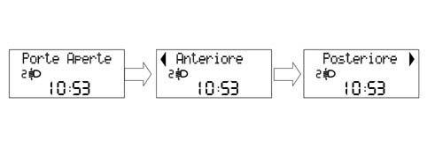
Applies to: all engines; all production periods
Display of DOOR OPEN/BOOT OPEN function
If only 'boot open', a screen with this specific message is displayed and remains in place for 10 seconds. Once the warning cycle has concluded, the indication alone remains active by means of a warning light on the panel.
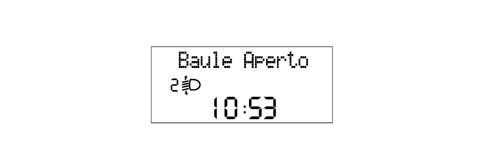
Applies to: all engines; all production periods
Display of DOOR OPEN/BOOT OPEN function
If all the doors are open, the following screen appears on the display.
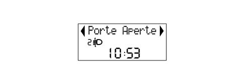
Applies to: all engines; all production periods
Display of DOOR OPEN/BOOT OPEN function
If the system detects one or more doors or the boot are open during the check stage at key-on, the door open warning light comes on on the control panel but the screen cycle ('Check in progress' proceeds normally without adding any specific message about door/boot status.
When the test cycle ends, the specific message is displayed (doors open/boot open) remains for as long as the DOORS OPEN/BOOT OPEN status remains.
If the DOORS OPEN/BOOT OPEN status occurs during the test cycle with the car in motion, the doors open/boots open message is displayed immediately.
If the doors or boot are open and the vehicle is in motion, an acoustic signal is also issued.
Applies to: all engines; all production periods
Display of DIMMED LIGHT ADJUSTMENT function
The driver can adjust light intensity inside the passenger compartment (lighting for grapics/control panel gauges/radio/climate control) by pressing the 'MODE +' e 'MODE -' keys. The brightness cannot be reduced to zero.
The effect of the light intensity adjustment operation (after pressing the keys) is visible immediately.
If the side lights are deactivated, the display is lit 100% and it is not possible to adjust light intensity. Adjustment is possible only with the exterior lights on.
The warning lights cannot be adjusted/dimmed (light intensity always 100%)
If intensity is adjusted, the message 'Lighting' is displayed on the first rowand the light adjustmnet symbols do not go on/off. When all the symbols are lit, maximum lighting conditons are achieved.
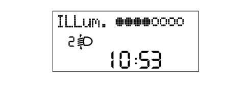
Applies to: all engines; all production periods
Display of DIMMED LIGHT ADJUSTMENT function
This screen remains for 5 s after the last command issued by keys. After this, the previous screen is displayed.
During fault/warning screens (apart from the ICE DANGER cycle), display lighting cannot be adjusted/dimmed and screen light intensity is always set at 100% during daylight conditions (sidelights deactivated). The 'MODE +' and 'MODE -' remain active to adjust the lighting intensity of the control panel and other vehicle components. The message 'lighting' is not however shown on the first row of the displayand the light adjustmnet symbols do not go on/off.
Applies to: all engines; all production periods
Display of the SPEED LIMIT function
It is possible to set a speed limit (between 30 and 250 km/h in steps of 5 km/h). When this is exceeded the following driver warning procedure is activated:
- the warning is given by means of a warning light on the control panel (general fault) and a speed limit exceeded message 'Excessive speed' is displayed at the same time. The warning message 'Slow down' is shown in rolling mode accompanied by a buzzer.
- once the warning cycle is complete, the message disappears but the warning light on the panel remains lit.
- message and/or warning light disappear only when vehicle speed drops 5 km/h below the set limit.
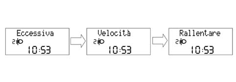
Applies to: all engines; all production periods
Display of the SPEED LIMIT function
This procedure is only carried out once after the speed limit is exceeded and can only be repeated if the speed of the vehicle decreases to at least 5 km/h below the limit set and then increases again exceeding the limit once more.
Applies to: all engines; all production periods
The information for the AUDIO function is displayed.
The following information may be displayed when the function is active:
- RADIO active function messages: band (FM1 / FM2 / FM3 / MW / LW), radio station (RDS message, if available, and/or frequency) activation of automatic search or Autostore (Seek)
- TAPE message (Tape), with indication of play functions (Play), playing side (A or B), rewind (<<), fast forward (>>), pausa (Pause)
- active Audio CD function message (Audio CD message), with indication of track number selected, Audio CD not present (NO CD), pause (Audio CD Pause)
- CD Changer active message (CDC message), with indication of CD number selected or track selected; CD Changer not present (NO CD), pause (CDC Pause + selected CD number)
- active CD MP3 message (CD MP3 message), with selected track number indications (if present); CD MP3 not present(NO CD), pause (CD MP3 Pause)
- MP3 Card active function message (MP3 Card message), indicating selected track number, pause, (Card MP3 Pause), Card MP3 not present (NO Card MP3).
This information may be permanently active if the NRR is working and repetition from the set-up menu display has been activated (see chapter on 'Functions selectable/activatable by measn of 'MODE'/'+'/'-' keys).
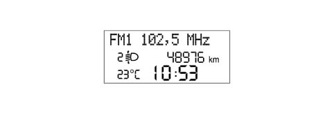
Applies to: all engines; all production periods
The information for the AUDIO function is displayed.
At key on and if TRIP COMPUTER, SET-UP MENU, FAULTS, PHONE or DIMMER information is present, AUDIO information is not displayed.
Applies to: all engines; all production periods
FOLLOW ME HOME function display
The following are shown on the on-board display:
- the follow me home function activated message
- the display seconds total set using the steering column switch unit which should not decrease during the display.
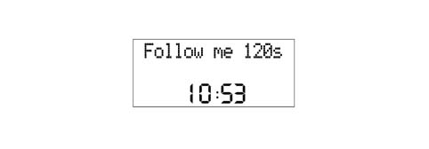
Applies to: all engines; all production periods
FOLLOW ME HOME function display
The display of the FOLLOW ME HOME screen remains for 20 seconds starting from the last time the steering column switch unit is pressed unless the function is deactivated during the display through an abort command from the steering column switch unit.
Applies to: all engines; all production periods
General Specifications
The TRIP computer is a specific function that makes it possible to show certain information relating the operational state of the vehicle on the instrument panel display: The following is a summary:
Parameters | Units of measurement |
|---|---|
Journey distance | km |
Instant comsuption and Average consumption | km/l l/100km |
Range | km |
Average speed | km/h |
Journey time | hh:mm |
The instrument panel receives the following information to calculate these parameters (input)::
Input for instrument panel | Received from |
|---|---|
Instant journey, with % oversize included | NPL |
Fuel level (% in relation to a full tank) | NPL |
Fuel tank capacity, in litres (stored in NQS, calibration parameter entered during EOL programming). | Memorized in the NQS |
Actual instantaneous speed (without increase) | NPL |
Instant consumption (in litres/hour); | NCM |
Journey time counted | Clock inside the NQS |
The unit of measurement for the consumption can be set by the customer (Km/l or l/100 Km). See chapter on keys selectable/activatable using the 'MODE'/'+'/'-' keys).
Each piece of information appears individually on the screen.
Each time the battery is reconnected, all the TRIP figures are zeroed. The measurement units set from the menu are maintained.
At each key on, the memory maintains the same values displayed at the previous key off (the displayed values are held in the memory).
The counting/updating of the TRIP information only takes place with the engine running (except for the Distance Travelled information, which is active from Key-ON).
The interval between zeroing the TRIP data once and the next time is defined by the term 'mission' and this zeroing can take place as follows:
- By pressing the button (for a time equal to t > 4 secs): the zeroing through a manual resetting operation for one of the TRIP figures involves resetting all the others (with the exception of the RANGE and the INSTANT CONSUMPTION) after which each figure is then counted independently. Resetting the 'general' TRIP also resets the TRIP B, whilst resetting the TRIP B is independent. The reset is maintained by pressing the relevant key,
- automatically: when the 'journey distance' information reaches the limit equal to 9999.9 (km or miles); when the journey time reaches the count limit of 99.59; whenever the battery is reconnected.
There are two TRIP modes (General and B), activated by the special button, with the functions listed below.
General Trip:
- Range
- Journey distance
- Average fuel consumption
- Instantaneous consumption
- Average speed
- Journey time.
Trip B:
- Journey distance 'B'
- Average consumption 'B'
- Average speed 'B'
- Journey time 'B'.
Applies to: all engines; all production periods
Range
The range indicates the estimated distance (in km or miles) that can be covered with the fuel currently contained in the tank and assuming that the mission will continue in the same driving style (same consumption conditions). Range is calculated using the following information:
- received from NPL: instantaneous mileage, fuel level (as a percentage of a full tank);
- received from NCM: instantaneous fuel consumption (in litres/hour);
- fuel tank capacity, in litres (calibration parameter entered during EOL programming by supplier)
The range is calculated considernig reference average fuel consumption and litres of fuel present in the tank.
Reference average fuel consumption value for calculating range is given by the average fuel consumption over the last 5 minutes of the mission.
At each key on the value memorized at the previous key off is displayed.
During the mission, the updating of the range data displayed is increased in increments proportional to the difference between the value displayed and the value calculated in order to prevent excessive fluctuations.
In particular:
- if the difference between the value calculated and the value displayed exceeds 40 km, then the range variation displayed is equal to one sixth of the difference.
- if the difference between the value calculated and the value displayed is between 6 km and 39 km, then the range variation displayed is equal to 3 km
- if the difference between the value calculated and the value displayed is less than 6 km, then the range variation displayed is equal to 1 km.
If the range is less than 50 km, no more data is sent to the user and the display shows the message 'Attention Limited Range' and simultaneously a buzzer goes off. Then the following message appears: '----'.
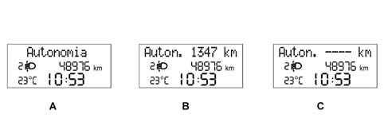
A - Message B - Message and value C - Message upon Battery Connection/Start of Mission
Applies to: all engines; all production periods
Range
Even if the TRIP screen is not activated, when the above mentioned limit is reached (range less than 50 km) the message is displayed in accordance with the logic described above and then the screen is returned to the moment there is a problem.
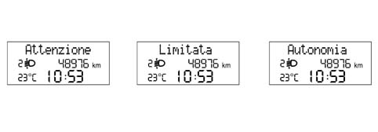
Applies to: all engines; all production periods
Range
If the fuel level changes (tank is filled up or fuel removed) then the new range is shown immediately. If, when the fuel has been introduced, the range is still below the limit (50 km) then no data is displayed and the warning '----' persists.
If the vehicle is at a standstill for longer than 5 minutes (e.g. at traffic lights) the last value before the stop is displayed for a set time. After this, the message '----' appears. The range calcluation remains active in any case.
Applies to: all engines; all production periods
Journey distance
The distance travelled by the vehicle since the start of the mission is shown, i.e. from when the user reset the function by pressing the dedicated button. It is active from key-on.
Each time the battery is reconnected or at the start of each mission, the display shows '0:0', after which the value calculated is displayed.
At each key on the value memorized at the previous key off is displayed.
When the maximum possible journey value is reached, the display is automatically reset and the total TRIP is reset, apart from the range and Instantaneous Fuel Consumption items.
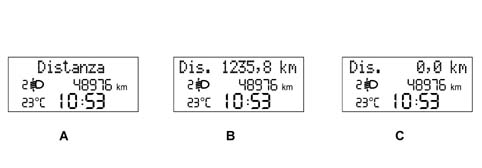
A - Message B - Message and value C - Message upon Battery Connection/Start of Mission
Applies to: all engines; all production periods
Average consumption
Average consumption refers to the ratio between the distance travelled since the start of the mission and the number of litres consumed since the start of the mission. The panel acquires the consumption signal via the B-CAN network and integrates it with the time, forming a ratio with the distance travelled since the start of the mission.
The calculation is only carried out with the engine running.
At the start of a new mission due to battery reconnection, the average consumption value is initialized at the 'pre-defined average consumption standard' personalized for the vehicle / engine type. At the start of a new mission due to TRIP reset (by pressing the dedicated key or reseting one of the TRIP parameters), the average consumption value is initialized to the 'average fuel consumption calculated during the previous mission'. After this the data displayed tends to present the actual mission consumption conditions (steady state value) within 3 minutes.
At each key on the value memorized at the previous key off is displayed.
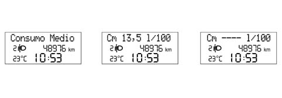
Applies to: all engines; all production periods
Average consumption
The average fuel consumption data displayed should be equal to '----' in the following cases:
- The user has reset the function by pressing the dedicated button.
- One of the TRIP parameters has been reset.
Applies to: all engines; all production periods
Instant consumptioin
The instantaneous fuel consumption refers to the value of litres of fuel consumed by the vehicle and measured during the last minute of the mission, calculated on the basis of a fuel consumption signal sent by the NCM.
The value displayed allows the user to appreciate differences in fuel consumption due to driving styles,
The control panel acquires the fuel consumption signal via the B-CAN network
The calculation is performed only with the engine running andthe data are updated every 5 seconds.
At the start of a new mission, the average consumption value is initialized at the 'pre-defined average consumption standard' personalized for the vehicle / engine type.
At key-on (during the mission) o calculate the instant consumption, in order to prevent the value displayed from varying too much, the fuel consumption data item initialised to the value for the last minute of the mission prior to key-off is used; Within 1 minute, as the mission proceeds, this the data displayed tends to present the actual mission consumption conditions (steady-state value).
When at a standstill with the engine running (traffic lights, queues etc.), the displayed value is equal to '---'.
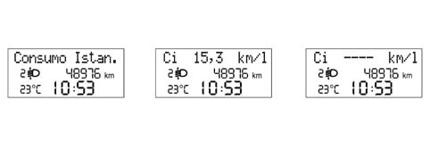
Applies to: all engines; all production periods
Average speed
The average speed is calculated at the start of the mission, as a ratio between the journey distance and the journey time.
Each time the battery is reconnected or at the start of each mission, the display shows '---', after which the value calculated is displayed.
At each key on the value memorized at the previous key off is displayed.
The average speed data displayed should be equal to '----' in the following cases:
- The user has reset the function by pressing the dedicated button.
- One of the TRIP parameters has been reset.
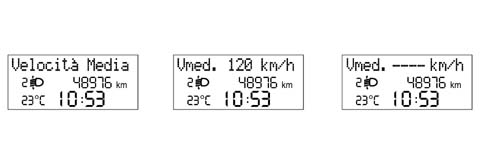
Applies to: all engines; all production periods
Journey time
The journey time indicates the time elapsed since the start of the mission, i.e. from when the user reset the function (by pressing the TRIP button or the automatic reset).
Each time the battery is reconnected or at the start of each mission, the display shows '00:00', after which the value calculated is displayed.
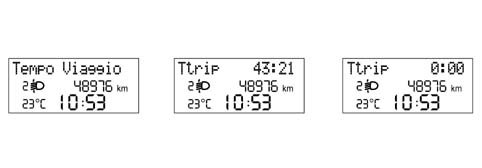
Applies to: all engines; all production periods
Journey time
At each key on the value memorized at the previous key off is displayed.
When the vehicle is stopped with the engine off (key-off) the counting of the journey time is halted but not reset and it resumes as soon as the vehicle sets off again (next key-on - engine running).
The journey time count is activated by the key on with the engine running.
When the maximum possible value is reached (99.59), the journey time display is automatically reset and a total TRIP reset is performed, apart from Range and Instantaneous Fuel Consumption items.
Applies to: all engines; all production periods
Procedure at start of journey (reset)
To start a new journey with the key in MAR position, press the button n the left stalk.
Applies to: all engines; all production periods
RECOVERY
If no information is available (CAN signals missing), all TRIP parameters display the message 'Not available'instead of the reading, together with a description of each parameter.
If the speed sensors are faulty, all the TRIP scales show dashes '----' together with descriptions of each scale (km for range, km/h for average speed, etc.).
If the fuel sensor is faulty, the dashes are displayed '------' for the Range and Average consumption scales only, together with descriptions for each scale
If the instantaneous fuel consumption signal is not present, dashes are displayed '------' for the Range and Average fuel consumption parameters only, together with descriptions for each parameter
When the fault disappears, the counting continues according to the appropriate modes for each piece of information and none of the figures acquired prior to the failure are reset and no new mission is started.
Applies to: all engines; all production periods
INERTIA SWITCH TRIGGERED display management
If the inertia switch is activated, the display shows the message ' Inertia switch activated See Manual' that remains fixed as long as the action persists.
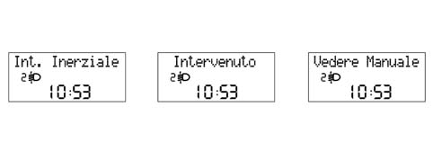
Applies to: all engines; all production periods
SET-UP MENU
Set-up menu functions that can be selected using the 'MODE' / '+' / '-' keyscan only be activated with the vehicle stationary,with the exception of speed limit activation/deactivation selection and speed limit threshold).:
These functions cannot be activated during display cycles for the fault messages Operation is sequential as follows:
Applies to: all engines; all production periods
'MODE' key
After an 'intial check', the menu screen may be accessed by pressing the 'Mode' key
Press the '+' or '-' keys to navigate inside the menu
When the car is moving, only the short menu is accessible (Speed Limit setting).
When the car is at a standstill, the long menu is accessible.
To recap:
1 short press:
- with vehicle at a standstill: activation of 'full' set-up menu and display of menu;
- with vehicle in motion: activation of short set-up menu;
- confirmation of function selected;
- confirmation of setting/modification made and return to main menu screen (for the same item).
1 long press:
- memorizing of modifications confirmed by short press and return to standard screen (or screen active before pressing 'MODE' key).
Applies to: all engines; all production periods
'+' / '-' keys.
Thei '+' '-' allow:
- selection of functions presentin the set-up menu;
- setting/adjustment of functions present in set-up menu;
- adjustment of brightness (dimming) (if pressed with set-up menu functions not activated)
Functions (e.g. clock adjustment) are set in increasingly short steps according to the length of time the key is pressed.
Applies to: all engines; all production periods
Timeout
When the Menu is accessed, if no setting/adjustment is carried out throughout a time of 60 seconds, the system automatically exits from Menu and displays the screen active previously. In this case, the lasting setting selected and not confirmed (by a short press on the 'Mode' button) is not stored; it is therefore necessary to repeat the operation (this also applies when exiting the set-up menu, by a long press on the Mode2 key).
Applies to: all engines; all production periods
SET UP MENU FUNCTIONS
Whilst the vehicle is driving the following functions can be displayed by pressing the 'MODE' button ('reduced' set-up menu):
- Introductory opening message for menu('Menu');
- Selecting speed limit activation/deactivation;
- Selection of speed limit level (item only displayed if the function has been activated with the previous item)
- Menu exit.
With the vehicle stationary, the following functions can be displayed by pressing the 'MODE' button ('complete' set-up menu):
- Introductory opening message for menu('Menu');
- Selecting speed limit activation/deactivation;
- Selection of speed limit level (item only displayed if the function has been activated with the previous item)
- 'TRIP B' activation/deactivation;
- Clock adjustment;
- Time mode (12h / 24 h);
- Date adjustment
- Setting unit of measurement for distances;
- Setting unit of measurement for fuel consumption;
- Setting unit of measurement for temperature;
- Setting language;
- Buzzer volume for alarms / failures / warnings;
- Buzzer volume for key depression (Roger beep);
- Service interval display (km/mi/days)
- Menu exit.
Certain details are given for some functions.
Applies to: all engines; all production periods
Units of measurement
The following measurement units can be selected
- Temperature: ° C o °F
- Distance: km or miles
- Fuel consumption: l/100km, km/l or mpg. Measurement units selectable for fuel consumption are consistent wtih the measurement unit selected for distance, according to the following table:
Distance measurement unit selected | Possible fuel consumption measurement units |
|---|---|
km | 1/100 km/l |
mi | mpg |
Applies to: all engines; all production periods
Functions that depend on the measurement unit selected
The following functions are expressed in the measurement unit set via the set-up menu:
- Mileometer;
- Range for tyre puncture
- Speed limit exceeded signal
- • Trip Computer
- outside temperature
- Service (Planned Maintenance)
Applies to: all engines; all production periods
OTHER FUNCTIONS
The following functions can be selected using the 'MODE' key with the vehicle at a standstill or moving:
- Interruption of failure display cycle (using the 'MODE' button)
- Interruption of the Trip Computer function display (using the 'MODE' button)
Applies to: all engines; all production periods
Acoustic signals
The control panel contains a buzzer that performs the following functions:
- alarm indication (fault/warning/danger);
- 'roger beep' when certain keys are pressed.
Acoustic signals may be of different intensity and frequency according to the severity and the function indicated, as follows:
- danger (e.g. doors/boot/bonnet open with vehicle in motion, handbrake on with vehicle in motion): 3 beeps x 3 times
- fault: 3 consecutive beeps
- warning (e.g. ice danger, fuel reserve, limited range (Trip Computer), system not available (EBD/ ABS/Hill-Holder), Vehicle Protection System Signals (warning messages): 1 beep (soft)
Alarm signal volume may be adjusted to a value of zero (signals excluded).
Applies to: all engines; all production periods
MEMORY MANAGEMENT AND WARNING LIGHT STATUS SIGNAL
The control panels memorize and transmit the status (ON/OFF) of the following warning lights (where present) via the CAN and whether or not there is a fault:
- Handbrake applied/insufficient brake fluid level/EBD failure;
- ABS failure;
- Electric steering failure.
In the case of warning light failure, a general fault warning light comes on on the panel and the display shows a message accompanied by a buzzer. After the warning cycle, the prevoius screen is reset.
Applies to: all engines; all production periods
DISPLAY OF INFORMATION RELATING TO THE PLANNED MAINTENANCE (SERVICE) FUNCTION
When the next service is nearly due, the message 'Service due in' followed by the number of kilometres or miles depending on the unit of measurement set using the set up menu or days until the next service is due is automatically displayed at the key-on (after the initial check procedure) (see chapter on Functions selectable/activatable using 'MODE'/'+'/'-' keys)
The service information can also be shown on the display, if requested by the driver, by selecting the appropriate item in the set-up menu. (See chapter on Functions selectable/activatable using 'MODE'/'+'/'-' keys) In this case, the display can always be shown, irrespective of the service interval.
The Planned Maintenance Programme includes 9 services with the following intervals:
1st service | 2nd sevice | 3rd service | 4th, 5th, 6th, 7th, 8th | 9th service |
|---|---|---|---|---|
After: 20,000 km (or 12.000 mi) - 1 year | After: - 20,000 km (or 12.000 mi) - 1 year from 1st service | After: - 20,000 km (or 12,000 mi) - 1 year from 2nd service | After: | After: - 20,000 km (or 12.000 mi) - 1 year from 8th service |
The service information is supplied in 'km' or in 'days' depending on which comes first.
Therefore, when a stage is reached (e.g. relating to the mileage: '2000 km'), the automatic signalling at the key-on of any other stage (e.g. relating to time) which could be reached later on should be excluded. In other words, once the mileage stage has been passed, the automatic display of all intervals relating to time should be inhibited, whilst the stages relating mileage will only be displayed once passed.
The starting data for the mileage should be 20,000 km (or 12,000 miles) and should be set by the Supplier of the instrument panel.
The starting data of 20,000 km should then be converted into miles by the control panel to ensure the recognition of the thresholds used for the display signals (as defined in the next paragraph).
The starting data for the days should be 365 days (1 year) and should be automatically set by the control panel when a total mileage of 201 km (125 miles) is reached.
Applies to: all engines; all production periods
CONTROL PANEL DISPLAY STRATEGY
The first message is only displayed once at the key-on if one of the following conditions occurs:
- the mileage until the service is equal to or less than 2000 km or to the corresponding value in miles (as shown in the table below).
- the no. of days until the service is equal to or less than 30
Later on, the message is only displayed once at the key-on each time the value is equal to or less than the following values:
- 1800, 1600, 1400, 1200, 1000, 800, 600, 400, 200, 100, 50 km (for the corresponding levels in miles, see the table below).
- 27, 24, 21, 18, 15, 12, 9, 6, 3 days.
Levels in 'km' for Planned Maintenance. | Levels in 'miles' for Planned Maintenance. |
|---|---|
2000 km | 1240 mi |
1800 km | 1116 mi |
1600 km | 992 mi |
1400 km | 868 mi |
1200 km | 744 mi |
1000 km | 620 mi |
800 km | 496 mi |
600 km | 372 mi |
400 km | 248 mi |
200 km | 124 mi |
100 km | 62 mi |
50 km | 31 mi |
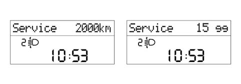
Applies to: all engines; all production periods
CONTROL PANEL DISPLAY STRATEGY
The moment 0 km (0 mi) / 0 days is reached (whichever comes first), the message 'Service Overdue' is shown again at every key on.
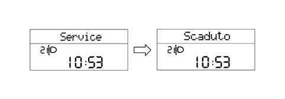
Applies to: all engines; all production periods
CONTROL PANEL DISPLAY STRATEGY
At each service interval, it is necessary to:
- reset the 'km' (or mileage) counter and the 'days' counter at the starting value (20,000 km/12,000 miles or 365 days) using the diagnostic equipment.
- memorize that the service has been carried out. A trace that the last service has taken place must therefore remain through the indication of: service date / service no. carried out / total mileage travelled. The data can be read / rewritten using the diagnostic equipment. The service number is decreased at each Reset-Info-Service starting from the starting value of 9 (decreasing from 9 to 0).
If the control panel is replaced, it is necessary to:
- rest the km/mi on the milometer.
- read the number of services carried out and record them in the new panel.
- read the counters showing km/mi and days until the next service and record them in the new panel.
If the battery is disconnected (no Vbatt), the control panel ensures that the stored data are maintained.
Applies to: all engines; all production periods
PINOUT
The diagram shows the instrument panel connector.
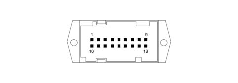
Applies to: all engines; all production periods
PINOUT
Basic instrument panel
Pin N° | Operation | Input / Output |
|---|---|---|
relay | +15 panel supply | 1 |
relay | Earth | 1 |
3 | Battery | 1 |
4 | N.C. | |
5 | N.C. | |
6 | C.A.F. signal | U |
7 | + Dipped headlamps | 1 |
8 | CAN B | I/U |
9 | CAN A | I/U |
10 | EOBD warning light | 1 |
11. | N.C. | |
12. | N.C. | |
13 | Air Bag fialure warning light | 1 |
14 | Passenger Air Bag disabled warning light | 1 |
15 | N.C. | |
16 | N.C. | |
17 | N.C. | |
18 | N.C. |
Medium instrument panel
Pin N° | Operation | Input / Output |
|---|---|---|
relay | +15 panel supply | 1 |
relay | Earth | 1 |
3 | Battery | 1 |
4 | Steering column switch unit Trip button | 1 |
5 | N.C. | |
6 | C.A.F. signal | U |
7 | + Dipped headlamps | 1 |
8 | CAN B | I/U |
9 | CAN A | I/U |
10 | EOBD warning light | 1 |
11. | N.C. | |
12. | N.C. | |
13 | Air Bag fialure warning light | 1 |
14 | Passenger Air Bag disabled warning light | 1 |
15 | N.C. | |
16 | N.C. | |
17 | N.C. | |
18 | N.C. |
High instrument panel
Pin N° | Operation | Input / Output |
|---|---|---|
relay | +15 panel supply | 1 |
relay | Earth | 1 |
3 | Battery | 1 |
4 | Steering column switch unit Trip button | 1 |
5 | N.C. | |
6 | C.A.F. signal | U |
7 | + Dipped headlamps | 1 |
8 | CAN B | I/U |
9 | CAN A | I/U |
10 | EOBD warning light | 1 |
11. | Buzzer activation by NCR | 1 |
12. | N.C. | |
13 | Air Bag fialure warning light | 1 |
14 | Passenger Air Bag disabled warning light | 1 |
15 | N.C. | 1 |
16 | N.C. | I/U |
17 | + Outside temperature sensor | |
18 | - Outside temperature sensor - Protected GND |
Applies to: all engines; all production periods
Overall list of functions shown on display
Information shown on the display may alter according to the settings/selections made by the user and/or events occurring during the journey. A summary table of possible information is shown below.
All messages on the High panel may be displayed in 8 different languages (Italian, English, German, French, Spanish, Portuguese, Dutch, Polish)
List of functions on BASIC instrument panel:
FUNCTIONS | Always present | Key-ON | At the occurrence | On request |
|---|---|---|---|---|
Clock | X | - | - | - |
Milometer | X | - | - | - |
Headlamp alignment adjustment | - | - | - | X (to +lights) |
List of functions on MEDIUM panel:
FUNCTIONS | Always present | Key-ON | At the occurrence | On request |
|---|---|---|---|---|
Clock | X | - | - | - |
Milometer | X | - | - | - |
Headlamp alignment adjustment | - | - | - | X (to +lights) |
Trip Computer | - | - | - | x One info at a time |
List of functions on HIGH instrument panel
FUNCTIONS | Always present | key-on | At the occurrence | On request |
|---|---|---|---|---|
Clock | X | - | - | - |
Date | X (default) | - | - | - |
Milometer | X | - | - | - |
Headlamp alignment adjustment | - | - | - | X (to +lights) |
Outside temperature | X | - | - | - |
'Ice' danger signal | - | - | X | - |
Function activation messages | - | - | - | X |
Fault/warning messages | - | - | X | - |
Check system | - | X | - | - |
Dimming | - | - | - | X |
Trip Computer | - | - | - | x One info at a time |
Service (Planned maintenance) | - | - | X | X |
AUDIO information repetition | - | - | X | X |
Telephone Information Repetition | - | - | - | - |
Set-up menu functions | - | - | - | X |